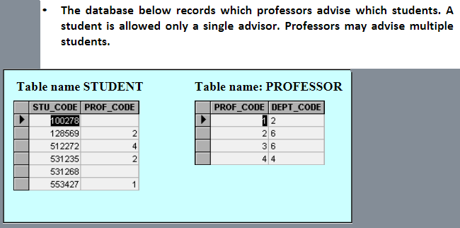
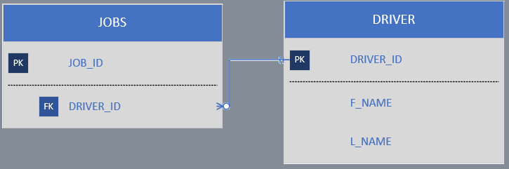

What is the difference been a database and a table?
A table is a collection of rows of data on a single related topic.
A database however is a container for the tables, stored procedures, views and functions. We can look
at a database as a logical container.
What does a database expert mean when he or she observes that a database displays both entity integrity and referential integrity?
Referential Integrity is the state in which all values of all foreign keys are valid. Entity integrity requires that each entity has a unique key. This means you have no repeating ids and no repeating foreign ids. Everything is working as intended.
Why are entity integrity and referential integrity important in a database?
Entity Integrity is important because all primary key entries are unique, and no part of a primary key may be null
Draw the basic entity relationship diagram for the database shown below.

Suppose that you have the entity relationship model shown below.
How would you convert this model into an entity relationship model that displays only 1:M relationships? (Make sure that you draw the revised entity relationship model.)

How would you implement a 1:M relationship in a database composed of two tables? Give an example.
Identify and describe the components of the database table shown, using correct terminology. Identify the entity name, its attributes and the primary and foreign keys.
The components are Field and records, and attributes. The entity name is EMPLOYEE, it's attributes are EMP_NUM, EMP_LNAME, EMP_INITIAL, EMP_FNAME, DEPT_CODE, JOBE_CODE. THe primary key is EMP_NUM, and the foreign keys are DEPT_CODE and JOB_CODE
Suppose that you are using the following database composed of the two tables shown?

A) The primary keys are: DIR_NUM, and PLAY_CODE.
B) The foreign key is: DIR_NUM.
Draw the entity relationship diagram
For each table in the database, identify the primary key and the foreign key(s). If a table does not have a foreign key, write NONE in the assigned space.TABLEPRIMARY

Draw the entity relationship diagram for the relationship between EMPLOYEE and JOB.
Do the tables exhibit entity integrity? Answer Yes or No, then explain your answer.
Do the tables exhibit referential integrity? Answer Yes or No, then explain your answer. Write NA (Not Applicable) if the table does not have a foreign key.
Draw the Entity Relationship diagram to show the relationships among EMPLOYEE, JOB, BENEFIT, and PLAN.

For each table, identify the primary key and the foreign key(s). If a table does not have a foreign key, write None in the assigned space.
Do the tables exhibit entity integrity? Answer Yes or No, then explain your answer.
Do the tables exhibit referential integrity? Answer Yes or No, then explain your answer. Write NA (Not Applicable) if the table does not have a foreign key.